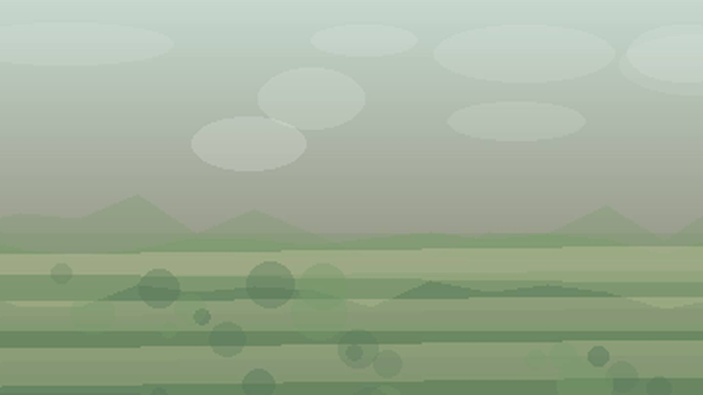

Что посадить
в Сахалинской области
Выберите природную зону в Сахалинской области: условия внутри региона различаются по теплу, влаге, ветру и длине сезона.
южная островная зона: короткий сезон и прохладное лето требуют ранних сортов, укрытий и самых устойчивых культур. Ориентиры внутри зоны: Южно-Сахалинск, Корсаков.
Открыть страницу зоны → центральная зонацентральная зона: короткий сезон и прохладное лето требуют ранних сортов, укрытий и самых устойчивых культур. Ориентиры внутри зоны: Поронайск, Макаров.
Открыть страницу зоны → северная зонасеверная зона: короткий сезон и прохладное лето требуют ранних сортов, укрытий и самых устойчивых культур. Ориентиры внутри зоны: Оха, Александровск-Сахалинский.
Открыть страницу зоны → прибрежная зонаприбрежная зона: короткий сезон и прохладное лето требуют ранних сортов, укрытий и самых устойчивых культур. Ориентиры внутри зоны: Холмск, Невельск.
Открыть страницу зоны →